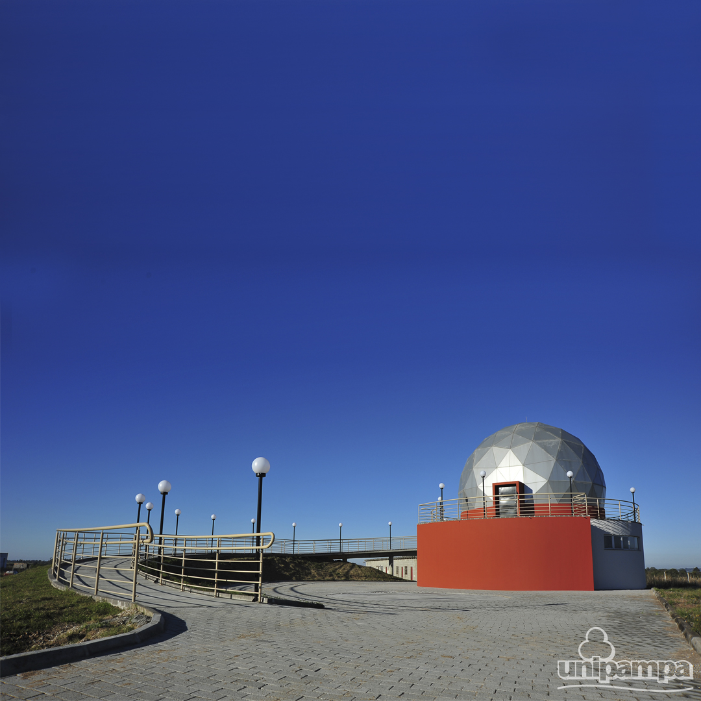
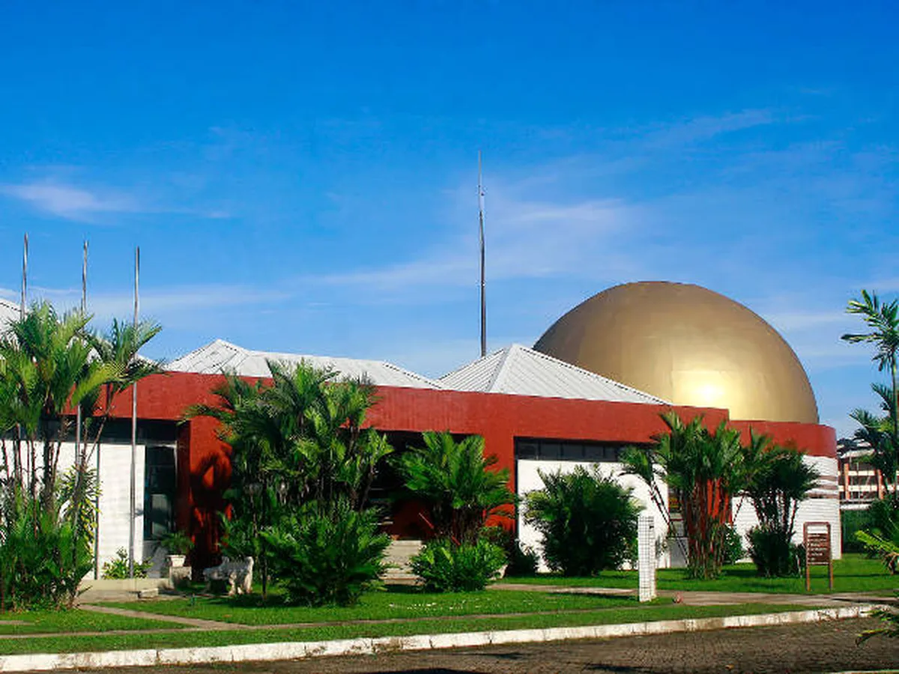
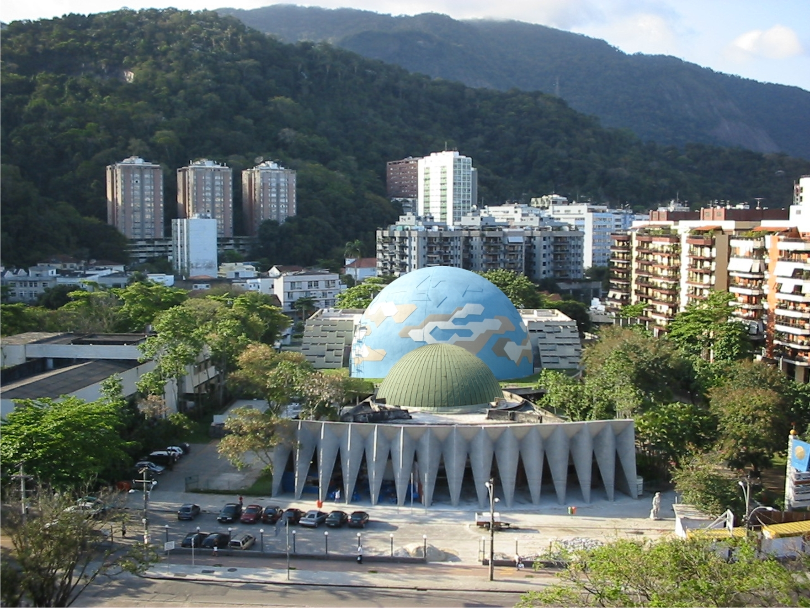
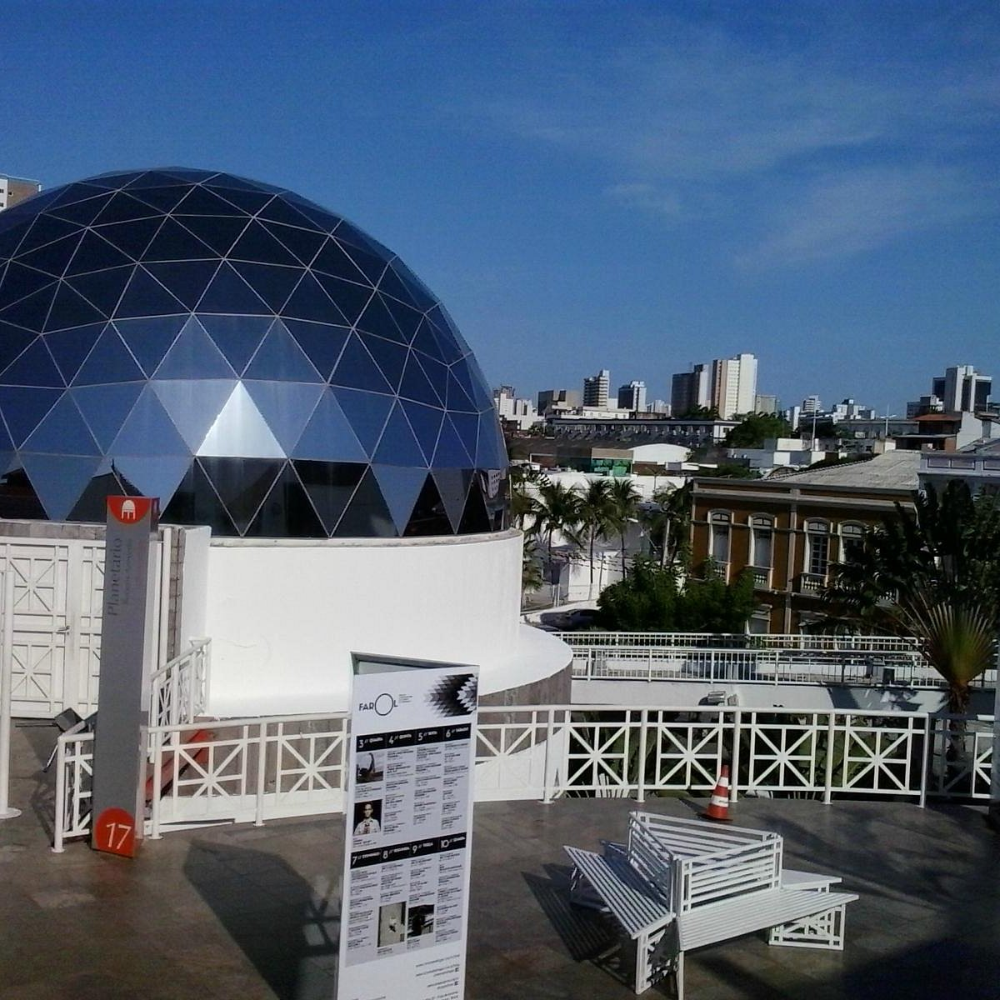
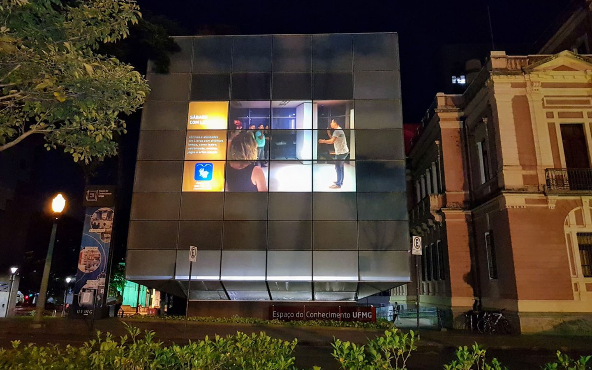

Bem vindo. Vamos entender oque é um planetário.
Um planetário é um local onde ocorrem apresentações teatrais sobre astronomia, e que simula o céu, sobretudo noturno, de acordo com a data e local de observação. Normalmente, é constituído por uma abóbada ou cúpula e por uma máquina colocada no seu centro, que projeta os diferentes objetos celestes.
No seu interior, normalmente assiste-se a sessões do planetário, onde se exploram e explicam conceitos da astronomia. Como complemento, muitos planetários têm equipamento audiovisual, como projetores de slides ou sistemas de som, que em muito enriquecem as sessões. É habitual as sessões de planetário serem conduzidas por um apresentador, sob a forma de sessões ao vivo.
Uma fração apreciável dos planetários existentes, são estruturas móveis, facilmente transportáveis, cuja cúpula é de um tecido apropriado, e que mantém a sua forma esférica recorrendo a um sistema que insufla ar para o seu interior. No planetário, também são usados telescópios.
| Cidade | Capacidade | Data de Inauguração | Foto | Site |
|---|---|---|---|---|
| Bagé - RS | 52 Pessoas | 2017 |  | Planetário Unipampa |
| Belém - PA | 105 Pessoas | 1999 |  | Centro de Ciências e Planetário do Pará |
| Rio de Janeiro - RJ | 350 Pessoas | 1998 |  | Planetário Rio |
| Fortaleza - CE | 80 Pessoas | 1999 |  | Planetário Rubens de Azevedo |
| Belo Horizonte - MG | 65 Pessoas | 2010 |  | Planetário Espaço do conhecimento |
 instagram
instagram Facebook
Facebook